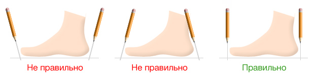
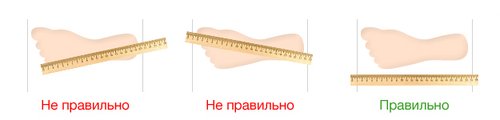

- Достаньте стельку из обуви и измерьте её длину.
- Если же стельку не удается достать, тогда наденьте на ногу носок (толщина носка варьируется, в зависимости от времени года), станьте на обычный лист бумаги и обведите стопу карандашом. Рекомендация: измерения лучше проводить вечером, так как размер стопы под конец дня увеличивается.
 - Линейкой измерьте длину стоп на обеих ногах, от выступающего пальца до пятки.
 - Определив наибольшее значение, округлите его и найдите значение в таблице.
- Не забудьте обратить внимание на полноту ноги, когда выбираете размер. Если полнота не указана, значит, обувь средней или нормальной полноты.
| США | Европа | Украина | Сантиметры |
|---|---|---|---|
| 6.5 | 38.5 | 37.5 | 24.1 |
| 7 | 39 | 38 | 24.4 |
| 7.5 | 40 | 39 | 24.8 |
| 8 | 40.5 | 39.5 | 25.4 |
| 8.5 | 41 | 40 | 25.7 |
| 9 | 42 | 41 | 26 |
| 9.5 | 42.5 | 41.5 | 26.7 |
| 10 | 43 | 42 | 27.0 |
| 10.5 | 44 | 43 | 27.3 |
| 11 | 44.5 | 43.5 | 27.9 |
| 11.5 | 45 | 44 | 28.3 |
Видеотитурал
если Вы до сих пор не поняли как снять замеры ноги, воспользуйтесь этим обучающим видеороликом: